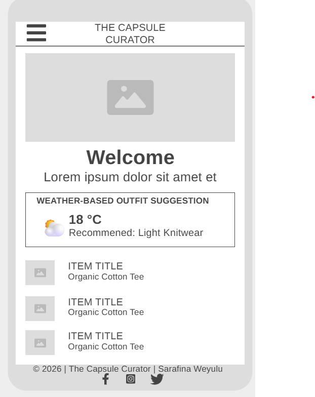
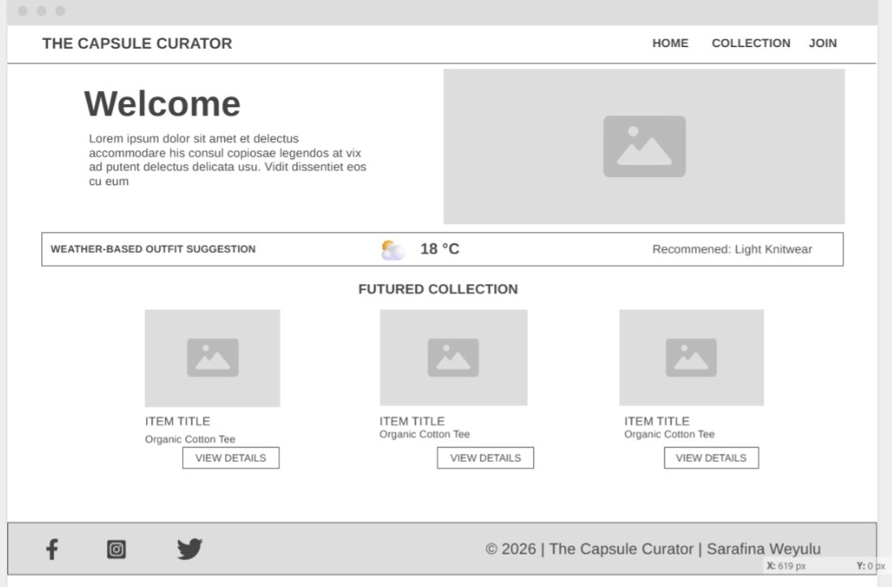

Site Name
Name: The Capsule Curator
Reason: Selected because it sounds professional and minimalist, highlighting the "curated" nature of sustainable fashion and high-quality staples.
Site Purpose
To provide a hub for minimalist fashion education. The site will offer a filtered directory of 15 essential pieces and an interactive weather-based outfit suggestion tool to help users simplify their daily style.
Scenarios
- "I have a very small closet; what are the top 5 versatile items I should own?"
- "It's 15°C outside; what sustainable outfit from my closet fits today's weather?"
Color Scheme
The palette uses muted luxury tones to reflect a sustainable and professional fashion aesthetic.
#1B2C36
Main Text & Headings
#9E7476
Primary Accents
#D3B5B3
Secondary Accents
#849398
Subtle Details
Typography
Headings: 'Playfair Display', serif — Elegant, high-fashion feel.
Body: 'Montserrat', sans-serif — Modern, readable, minimalist.
The quick brown fox jumps over the lazy dog.
Wireframes
Mobile View

Desktop View
